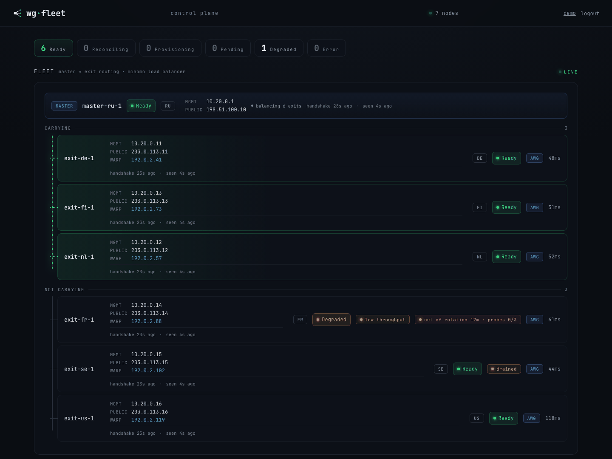

AmneziaWG exit fleets
Declare the fleet. wgfleet builds it and holds it there.¶
wgfleet is a controller and per-node agents that turn blank Ubuntu servers into a small fleet of AmneziaWG exit nodes behind one master, then keep them that way: a reconcile loop renders interfaces, routes, firewall and DNS from one manifest, REALITY/VLESS stands in as a second transport when AmneziaWG is blocked, egress failover moves clients off a bad exit on its own, and a web console shows the whole fleet at a glance.
declarative dry-run first keys stay on node AmneziaWG + REALITY

-
Quickstart
From two blank Ubuntu servers to a working VPN in about 30 minutes: master, one exit, first client.
-
System requirements
What a node must be, what the platform installs itself, and which distribution and kernel combinations are supported.
-
Operations
Day-to-day fleet work: dry-run, the dashboard, client credentials, break-glass access, backups, node health and module upgrades.
-
Configuration reference
Every manifest key, its default, and where the underlying tool documents the passthrough surface. If a key is not on this page, it is not a key.
-
Support bundle
A read-only diagnostic archive to hand to someone without server access. Plain text, no secrets, printed before it leaves the machine.
-
Changelog
What changed for operators in each release: behaviour, manifest keys, CLI flags, the console, and the steps an upgrade asks of you.
Releases ship as an archive with these pages inside; this site is the same material, always for the latest release. Manifest walkthrough, SOPS secrets and the CLI live under Configuration; moving a client leg off wg-easy or moving the master under Migrations; the RU split-tunnel setup under Recipes.